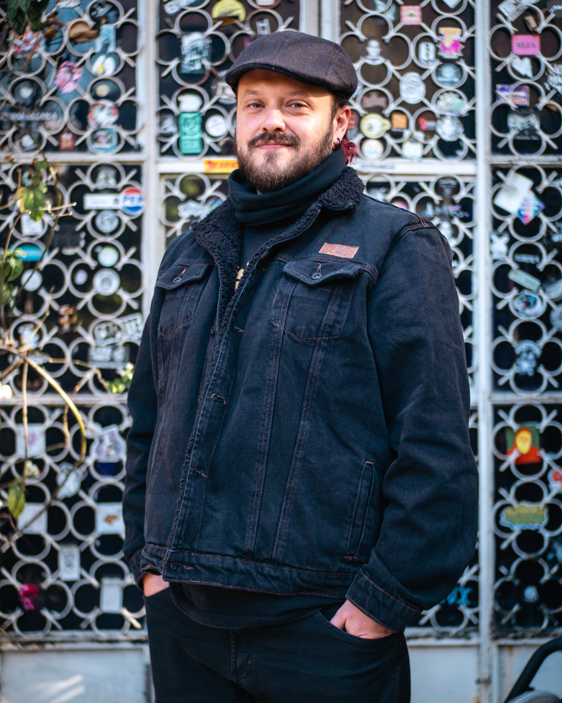

Direção técnica completa e coordenação de switcher.
Olá, eu sou o
Diretor de TV | Livestreaming | COM DRT
20 anos de Broadcast — do analógico ao 4K, do estúdio ao IP.
Rede TVT · São
Bernardo do Campo, SP.

Sou Eduardo Quirino, Diretor de TV e Livestreaming com 20 anos de carreira acompanhando a transição do sinal analógico para o ecossistema digital multiplataforma — da evolução SD para o 4K e fluxos baseados em IP. Atuo na Rede TVT, com sede em São Paulo.
Como detentor de DRT (Diretor de Imagens), trabalho na intersecção entre o rigor técnico das emissoras tradicionais e a agilidade do Livestreaming — garantindo visão multicâmera precisa sob pressão, gestão de equipes técnicas complexas e implementação de novas linguagens visuais em tempo real.
Coordenação técnica de programas televisivos
Operação e gerenciamento de transmissões ao vivo.
Operação de câmera e enquadramentos ao vivo
Gestão de infraestrutura e equipamentos de broadcast
Domínio dos equipamentos e fluxos de broadcast ao vivo
Seleção de produções e direções que definem minha carreira
Direção técnica completa e coordenação de switcher.

Direção técnica completa e coordenação de switcher.

Direção técnica completa e coordenação de switcher.

Direção técnica completa e coordenação de switcher.
Trajetória em emissoras e produções de TV
Rede TVT — Grande São Paulo
Direção de imagens e coordenação técnica de transmissões ao vivo de jornalismo e entretenimento. Implementação de fluxos para TV linear e streaming simultâneo. Liderança de equipes multidisciplinares e inovação em tecnologias de baixa latência.
Rádio Brasil Atual 98,9 FM — São Paulo
Gerenciamento e operação técnica das transmissões de vídeo ao vivo da rádio para plataformas digitais.
TV São Caetano — São Caetano do Sul
Canal Rede TV Mais ABC — Santo André
Operação de câmeras Sony NX-5 e Z7, edição de vídeos e direção de programas gravados e ao vivo.
Universidade Metodista de São Paulo
Universidade Metodista de São Paulo
Vamos trabalhar juntos?
Aberto a novas oportunidades em emissoras, produções ao vivo e projetos de streaming. Acompanhe minha trajetória no LinkedIn.